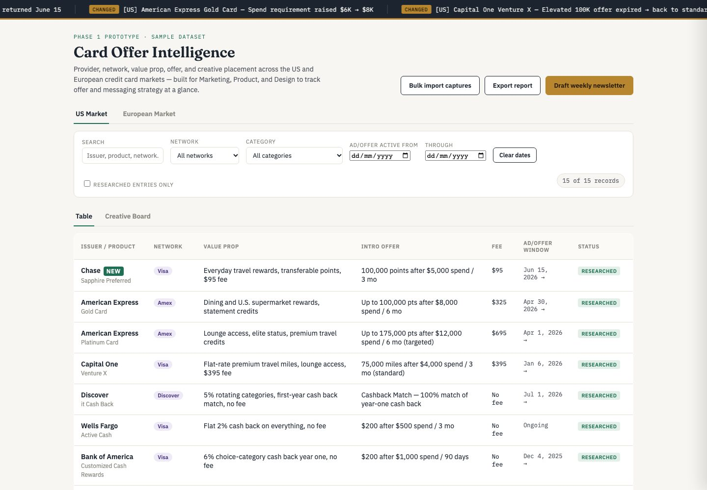
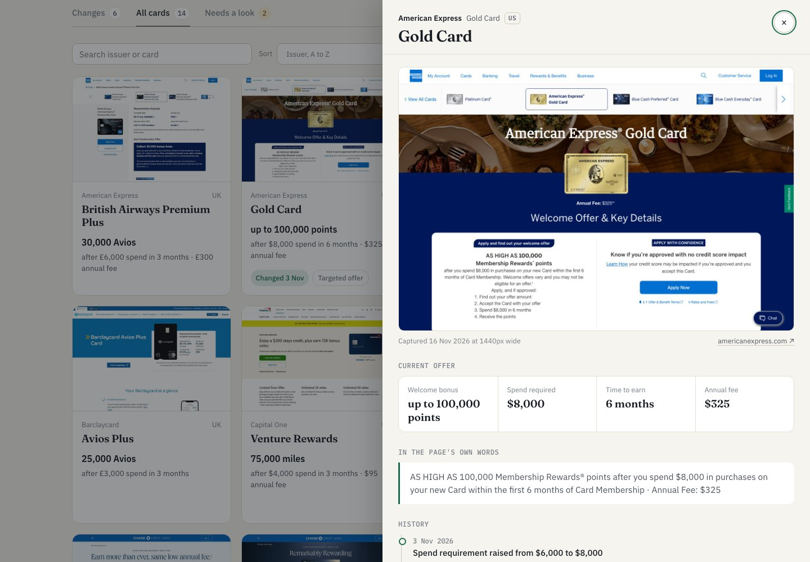
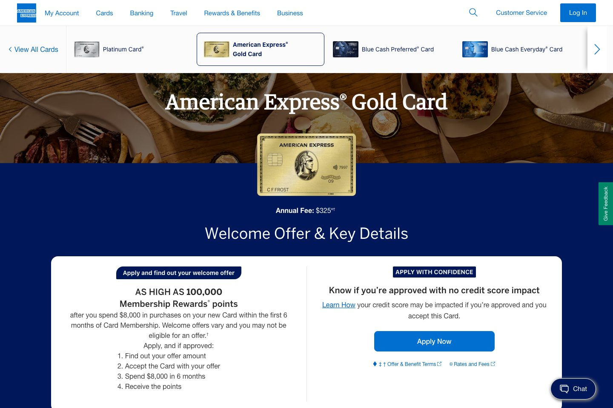
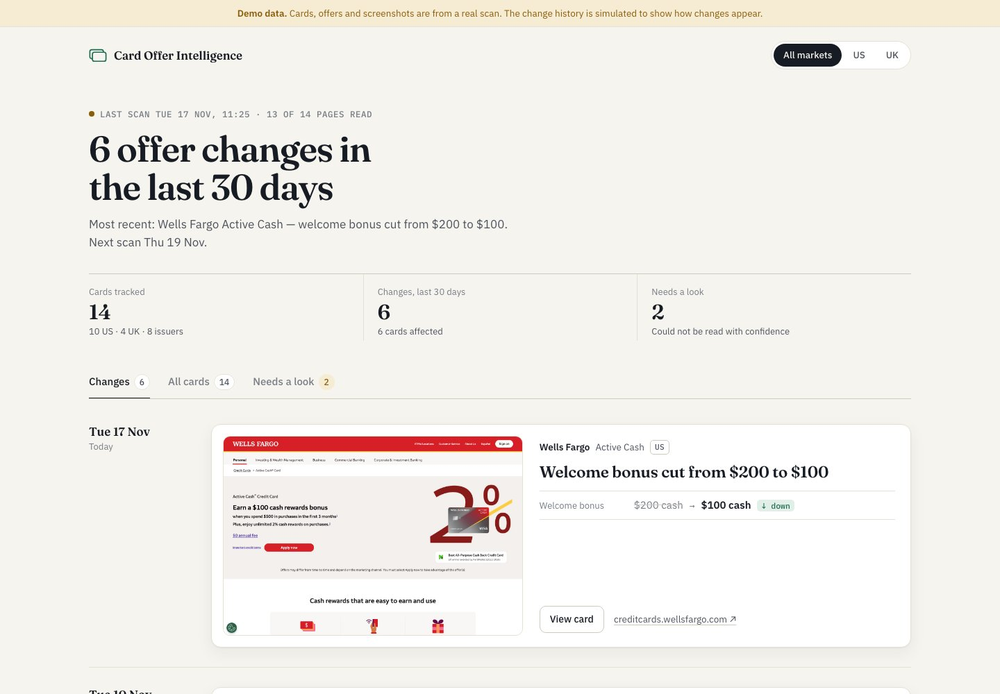

A scanner that reads competitor credit card offers twice a week, and a dashboard that shows what changed next to a screenshot of the page. I built a working prototype at Expedia Group in 2025 and rebuilt it in 2026.
My role
I wrote the spec, designed the dashboard and directed the build.
What I did myself
The spec, the design of the dashboard and the decisions below. The 2026 code was written with Claude Code, under my direction.
What others owned
The Expedia prototype was a solo project. I took feedback from my manager, a senior director of design, and from the strategic marketing lead for the credit card workstream. The 2026 rebuild is my own project.
Dates
The Expedia prototype ran from spring to the end of 2025. I built the first dashboard in July 2026 and rebuilt it in November 2026. The scanner and dashboard went public on 17 November 2026.
Built with
Claude Code, Playwright, Node.js, SQLite and GitHub Actions.
We wanted to know what competitors were offering new cardholders. The four facts we cared about on each card were the welcome bonus, the spend needed to earn it, the time allowed and the annual fee, and we wanted to see the creative each issuer used to sell the offer.
We found all of this by hand. It took a lot of time, and every figure needed a person to check it, because one wrong digit in a bonus or a fee makes a comparison worthless.
In spring 2025 I started a working prototype of an agent to do the finding. It pulled in the latest offer numbers from competitors in the US market and the changes to them, fed them into a newsletter for senior leaders and linked through to the competitors' offer designs. We still had to get the screenshots by hand to see how each offer was designed. I describe it in Building with AI. Work on it continued through the end of 2025. Internal changes and reorganisations kept delaying it, so it didn't ship there. In 2026 I rebuilt it as my own project.
What made it hard
Issuer pages are built with JavaScript and each one words its offer differently. The bonus can sit in a headline, the spend in the body and the time allowed in a footnote.
Some sites refuse automated visits. Bank of America and NerdWallet both turned the scanner away, so I left them out.
Some offers don't come as a single number. American Express shows "as high as" 100,000 points, which is a ceiling, so the dashboard labels it as targeted.
A wrong figure undermines the whole report, so the scanner has to say when it isn't sure.
The first dashboard still depended on people
The first dashboard, in July 2026, was a table, a creative board and a draft of the weekly newsletter for senior leaders. The offer numbers in it came from a tool I had first built in Claude. Five of its 21 rows were placeholders labelled as illustrative. The screenshots still had to be found by hand and pasted in through a bulk-import box.
The first dashboard

Its own footer dated the data to July 2026. When the scanner first ran in November I compared the two. Six cards were in both, and four of them showed a different offer or figure on the issuer's own page.
July data against the live pages in November
Card
July dataset
Live page, November
Chase Sapphire Preferred
100,000 points
75,000 points
American Express Platinum
$695 annual fee
$895 annual fee
Wells Fargo Active Cash
$200 bonus
$100 bonus
Discover it Cash Back
Led with Cashback Match
Leads with a $200 bonus
Decisions
Compare the figures
Considered
Alerting when the wording on a page changes, or when words like "new" or "limited time" appear.
Chose
Read each offer into four facts, which are the bonus, the spend, the time allowed and the annual fee, and compare them with the last scan one at a time.
Why
The point is market intelligence on each competitor's value proposition and on changes to its offer amounts. Issuers often change only the amount and leave every other word on the page as it was, so a wording alert would miss exactly those changes.
4 of 6 cards in both the July data and the first scan showed a different offer or figure.
Keep a person in the loop
Considered
Treating a page the scanner couldn't read as unchanged.
Chose
Pages it can't read with confidence go to a separate Needs a look list and aren't reported as changed or unchanged. Every change shows a screenshot and the issuer's own wording.
Why
At Expedia we had to verify every offer the prototype found, and the review of the offer designs was always done by the team. I kept that, and built the dashboard around making the check quick. I think the point where people stay in the loop is the most important decision in a system like this.
A card's detail panel

Screenshots beside the numbers
Considered
Image links pasted in by hand through a bulk-import box, which is how the first dashboard worked.
Chose
The scanner takes a screenshot of each page and keeps a new one whenever an offer changes.
Why
The screenshots show the design teams how an offer is presented. At Expedia the "Show the Math" design linked the offer to the booking value. In later tests the offer values were reduced and it still performed better, because of that link.
1st of 5 travel credit card adverts for comprehension, at 7.1 out of 10, and second for value, in independent research for the Show the Math work with 47 travellers.
A screenshot taken by the scanner

Open on what changed
Considered
The table of cards that the first dashboard opened on.
Chose
The first screen shows what changed since the last scan. The full list of cards is one tab away, and a quiet week says so. Changes are marked with an arrow up or down, and I left out red and green.
Why
A competitor raising a bonus isn't good or bad news in itself.
The change feed (demo)

This is the demo. Everything in it comes from a real scan except the change history, which is simulated so the feed has something in it. The live dashboard shows no changes yet.
No selector for each page
Considered
A CSS selector for each card page, which is how the first version of the scanner worked.
Chose
The scanner reads the page in order and takes the first statement that pairs a bonus with a spend requirement as the card's own offer.
Why
Selectors broke whenever an issuer redesigned a page. With this rule a new card needs only a link.
Results
14card pages read twice a week, 10 in the US and 4 in the UK
About 2 minfor a full scan on my machine
4 of 6cards in both the July data and the first scan showed a different offer or figure
$0a month to run. GitHub's free tier covers a public repository, and the AI step is switched off
There are no usage numbers yet. The live dashboard shows no changes until a scan finds one.
The Expedia version went to directors and senior directors, and to the strategic marketing lead for the project.
Every card, with its current offer
What went wrong
The parser misread two pages on the first real scan
It read Chase Freedom Unlimited as 1.5% cash back, which is the everyday rate, and missed the $200 bonus. It missed HSBC's spend because screen-reader labels sat in the middle of the sentence. Both are fixed, and the tests now use text from the real pages.
American Express blocked the first read
Three American Express pages failed because the site doesn't let scripts read the page text. The scanner now reads the text another way.
An empty answer counted as a confident one
An early version of the AI fallback treated a reply that found nothing as a confident reading, which would have turned an unreadable offer into "no change". It now stays low confidence and goes to the Needs a look list. The fallback is built but switched off, so the live scans don't use it.
A slow page cost a card its scan
The first scan in GitHub Actions timed out on Barclaycard Avios. The scanner now retries a slow page once.
What I would do differently
I would have polished the interface more. I would also have set up automated updates in Slack channels and automated email reports, to encourage people to use it.
Next I'd like to include paid social and mentions of the cards on social media. That means tracking offer creative across paid social and display, where most new campaigns appear first, and alerting the people who own each competitor relationship when their cards move. The spec left paid social and display out on purpose because they need a different kind of tool, so that would be a separate piece of work.
The first dashboard could draft the weekly newsletter. This one can't yet, and the emailed report covers part of that once email is switched on.
It reads public offers. Personalised offers behind a login or an eligibility check are out of reach. The scanner checks each site's robots.txt before it fetches a page.